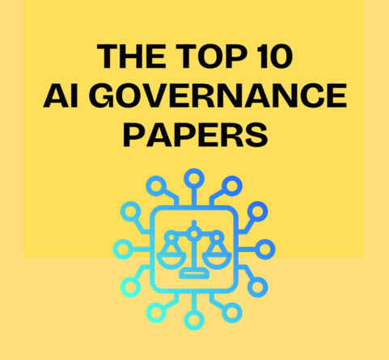

AI Governance Research Papers
General Information
This is a collection of research papers on AI Governance.
- Luiza Jarovasky list of TOP 10 AI governance papers published in 2024.
- Link to the open access or pre-print full papers.
In-depth Exploration of Research Papers
Deep Dive into research papers with AI powered Smart Search.Research Papers
- The Great Scrape: The Clash Between Scraping and Privacy by Daniel Solove & Woodrow H.
- Brave New World? Human Welfare and Paternalistic AI by Cass Sunstein
- The Law of AI is the Law of Risky Agents without Intentions by Ian Ayres & Jack M. Balkin
- Theory Is All You Need: AI, Human Cognition, and Decision Making by Teppo Felin & Matthias Holweg
- Anthropomorphising Machines and Computerising Minds: The Crosswiring of Languages Between Artificial Intelligence and Brain & Cognitive Sciences by Luciano Floridi & Kia Nobre
- The AI Risk Repository: A Comprehensive Meta-Review, Database, and Taxonomy of Risks From Artificial Intelligence by Peter Slattery, PhD, Alexander Saeri, Emily Grundy, Jess Graham, Michael Noetel, Risto Uuk, James Dao, Soroush J. Pour, Stephen Casper & Neil Thompson
- Digital Democracy in the Age of Artificial Intelligence by Claudio Novelli & Giulia Sandri
- On the Antitrust Implications of Embedding Generative AI in Core Platform Services by Thomas Hoppner & Steffen Uphues
- Consent and Compensation: Resolving Generative AI's Copyright Crisis by Frank Pasquale & Haochen Sun
- AI and Epistemic Risk for Democracy: A Coming Crisis of Public Knowledge? by John Wihbey